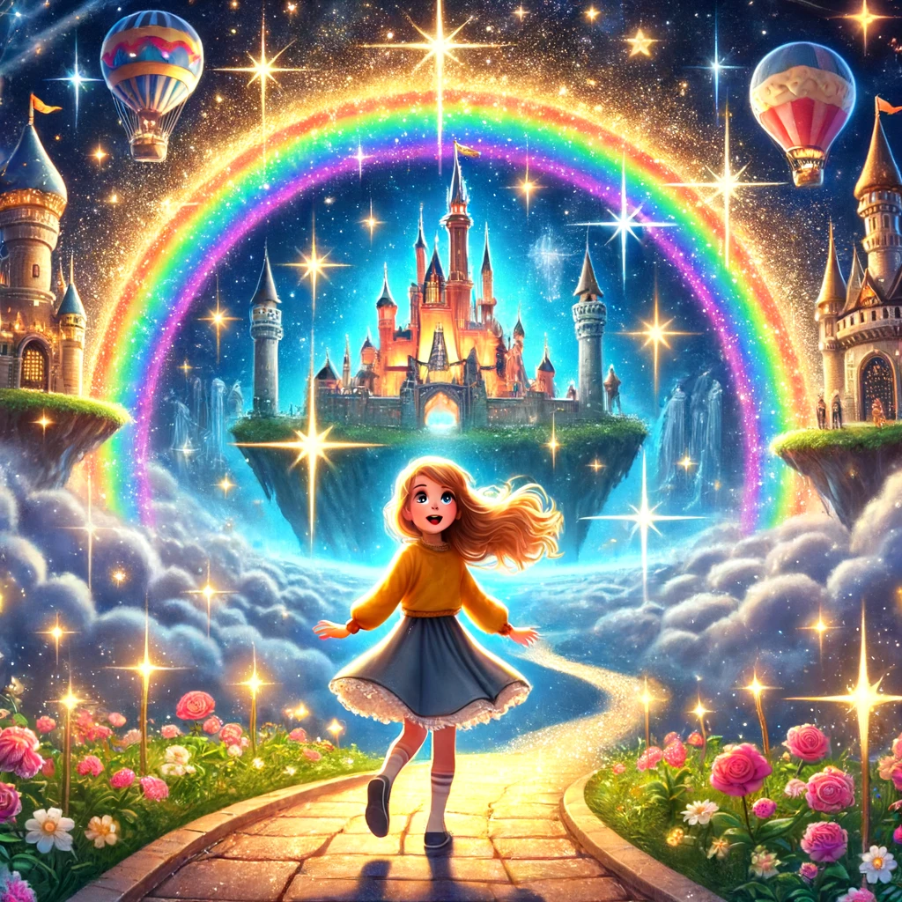

Un Viaje Entre las Nubes

Había una vez una niña llamada Valeria que vivía en un pequeño pueblo al borde de un vasto bosque. Valeria tenía una imaginación desbordante y siempre soñaba con lugares mágicos y aventuras increíbles. Una noche, mientras miraba las estrellas desde su ventana, escuchó una historia fascinante de su abuela sobre un lugar mágico llamado Torricel.
Torricel era un reino encantado oculto entre las nubes, donde los castillos flotaban y los caminos estaban hechos de arcoíris. Se decía que en Torricel, cualquier sueño podía hacerse realidad y que era un lugar donde la magia vivía en cada rincón. Valeria se quedó fascinada con la historia y decidió que algún día encontraría la manera de viajar a Torricel.
Esa misma noche, Valeria tuvo un sueño muy vívido. En su sueño, se encontraba en un claro del bosque, donde había un antiguo portal hecho de estrellas y luces brillantes. Sintió que ese portal era la entrada a Torricel y al despertar, supo que tenía que encontrarlo en la vida real.
Con determinación, Valeria se adentró en el bosque al día siguiente, siguiendo su intuición y la imagen del portal en su sueño. Caminó durante horas, cruzando ríos y trepando colinas, hasta que finalmente llegó a un claro iluminado por la luz de la luna. Y allí, frente a ella, estaba el portal de su sueño, brillando con una luz mágica.
Sin dudarlo, Valeria atravesó el portal y se encontró en el increíble reino de Torricel. Todo era tal como su abuela lo había descrito: castillos flotantes, caminos de arcoíris y un cielo lleno de estrellas brillantes. Valeria se maravilló al ver criaturas mágicas volando a su alrededor y paisajes que cambiaban de colores con cada paso que daba.
En Torricel, Valeria conoció a un hada llamada Estrella, que se convirtió en su guía y amiga. Juntas, exploraron los castillos, volaron entre las nubes y vivieron aventuras increíbles. Estrella le mostró a Valeria cómo la magia de Torricel podía hacer realidad cualquier sueño, y Valeria aprovechó la oportunidad para aprender sobre los secretos de la magia y la maravilla.
Después de muchas aventuras y descubrimientos, Valeria sintió que era hora de regresar a casa. Aunque estaba triste por dejar Torricel, sabía que siempre llevaría consigo la magia y los recuerdos de ese lugar maravilloso. Con una sonrisa, se despidió de Estrella y atravesó el portal de regreso a su pueblo.
Desde entonces, Valeria siempre recordó su viaje a Torricel y supo que los sueños podían hacerse realidad con un poco de magia y mucha determinación. Y así, vivió feliz, sabiendo que el reino de Torricel siempre estaría allí, esperando su regreso.
Y colorín colorado, este cuento se ha acabado. Buenas noches, Alondra. ¡Dulces sueños!